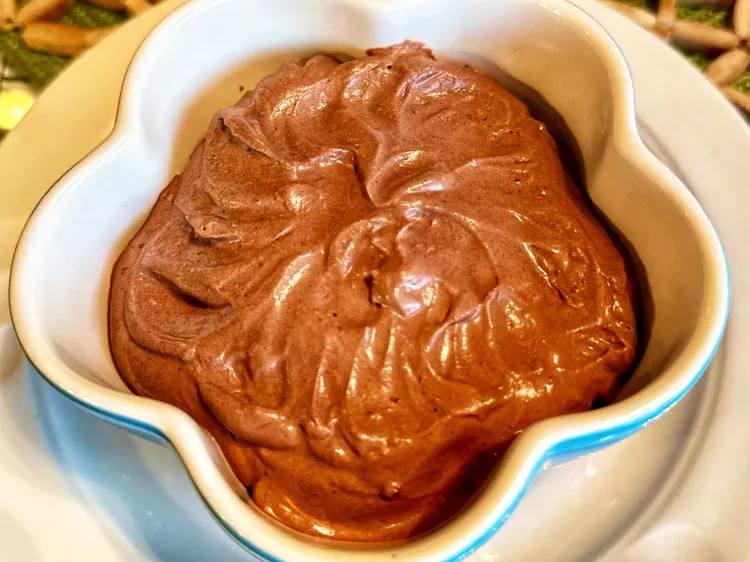

In a hurry for a quick and delicious dessert? Got unexpected company drop by? This dessert is ready in less than 5 minutes. Ready to eat as soon as it is made or chill in the fridge for later.
Time to make: 5 mins
For 4 servings
Combine heavy whipping cream, Bailey's, cocoa powder, powdered sugar, vanilla extract, and salt a large bowl. Beat with an electric mixer until stiff peaks form.
Serve immediately or chill until serving.